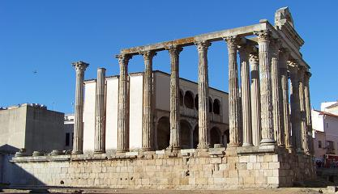
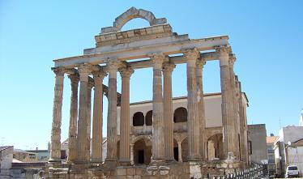
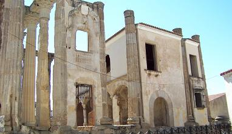

|
Templo de Diana
Uno de
los pocos templos de arquitectura religiosa que ha perdurado hasta
nuestros días.
Construido a finales del siglo I a.e.c. o principios del siglo I, pocos
años después de la fundación de la ciudad, bajo el mandato del emperador
Augusto. A pesar de su nombre, erróneamente asignado en su descubrimiento,
el edificio estaba dedicado el culto imperial.
Ver
video
|
 |
 |
 |
Es de planta rectangular,
construido con granito. Esta rodeado por columnas –períptero- y en el
frente del templo se hallan seis magnificas columnas -hexástilo- .
Orientado al foro, se accedía mediante una escalera a través de un frontón
semicircular, que se ha reconstruido.
Las columnas poseen capiteles de estilo corintio, basas áticas y fustes
acanalados. Las columnas están apoyadas sobre una imponente base de
sillares de granito; y coronadas por una cornisa moldurada. Las columnas
estaban pintadas de estuco rojo imitado mármol dando así una mayor
sensación de riqueza.
|